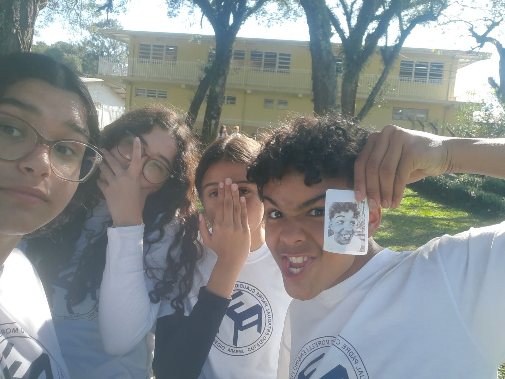

O ensino médio… que medo eu tenho de você. Sinto que estou perto do fim e, quando isso acabar, o que eu vou fazer? Ano passado, no 1º ano, eu tinha certeza sobre o resto da minha vida, porém, este ano, já não quero mais nada do que pensava que queria antes. Tenho lembranças incríveis do ano passado, um ano memorável. Estava em uma sala onde me sentia extremamente confortável, conhecia a maioria das pessoas e me sentia em casa, apesar dos altos e baixos.
Porém, quando tivemos que fazer a escolha entre exatas e humanas para o 2º ano, tudo mudou. Cada um foi para um lado, e, além disso, até quem escolheu o mesmo foi separado. Falando a verdade, quando entrei nessa sala, estava morrendo de medo de não conseguir me enturmar. No início, foi bem difícil. Eu ficava a maior parte do tempo quieta e só falava com quem já conhecia, e, mesmo assim, ainda não me sentia incluída.
Mas, com o decorrer do ano, fui me enturmando, fazendo colegas e criando amizades. Hoje me sinto muito bem nessa sala, me sinto confortável novamente.
Mas ainda é difícil lidar com mudanças — que, aliás, eu odeio. Mas agora eu sei e entendo que precisamos delas pois elas que nos fazem crescer e amadurecer.

.png)